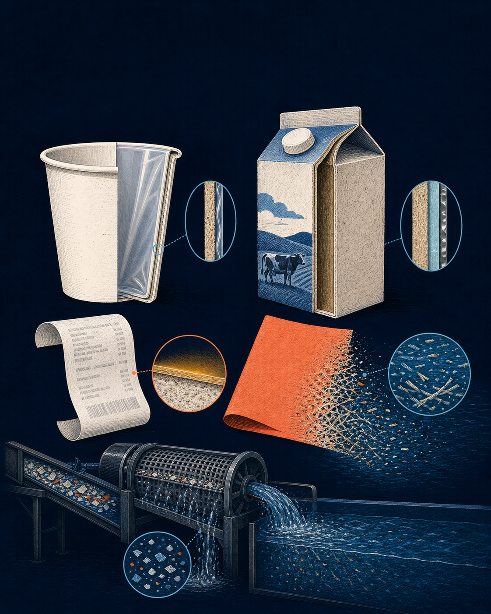

Resin Identification Code
The numbers 1–7 identify the type or family of plastic resin. ASTM states: the code does not imply that an article is recyclable or that a system exists to process it.
ASTM definition →
Ordinary paper objects contain more than wood pulp. Original illustration generated for this feature.
Paper, plastic, trash. These categories are never simple. Plastic has resin identification codes. Electronic parts, batteries, and every other unusual object we decide has filled its purpose- most items don't fall into one neat box. Trash and recycling are often indistinguishable - leading to wishcycling (see definition).
Paper tends to be the easy one. Envelopes, junk mail, magazines, receipts, old holiday cards.
The problem is, it isn't so clear-cut.
If all paper products were made the same way as an average sheet of paper going into your printer, your pictures would look dull, and your mid-afternoon coffee would spill all over your lap onto your new pants.
The numbers 1–7 identify the type or family of plastic resin. ASTM states: the code does not imply that an article is recyclable or that a system exists to process it.
ASTM definition →Putting a doubtful item in the recycling bin because you hope it can be recycled. While the intention is good, it results in contamination, extra sorting costs, and rejected loads. This means recyclable items get tossed because a nonrecyclable contaminated the batch.
Paper begins as cellulose fibers, usually separated from wood by mechanical or chemical pulping. The wet fibers are cleaned, refined, distributed across a moving screen, pressed and dried into a sheet. During that process, manufacturers can then add mineral pigments, binders, wet-strength resins, ultraviolet coatings, liquid finishes, adhesives or plastic laminates to give the sheet colour, gloss, grease resistance or a liquid barrier.
The modification may be extremely thin, often invisible. A continuous polyethylene layer only a few micrometers thick can stop liquid from reaching the cellulose beneath. Great for your new skirt, not so much for recycling.
See how paper is made →At a paper mill, bales of recovered paper enter a pulper: a large vessel that combines paper, water and mechanical agitation. The result is a suspension of individual cellulose fibers—essentially an industrial wood smoothie. We call this pulp. Coarse screens remove large contaminants. Pressure screens separate particles by size and shape; centrifugal cleaners use density differences to reject materials such as sand, glass and metal. For some grades, washing and flotation remove ink.
The plastic laminates on envelopes and the ink from that dull work brief are filtered out.
A strongly bonded film or resin can remain as plastic flakes. Every contaminated batch gets rejected, tossing processable items in the process.
Another issue: food residue- a greasy pizza box, a coffee-soaked paper towel - these often cannot be recycled.
Paper breaks into fibres; some coatings do not.
National totals make paper look like recycling’s star performer. EPA’s 2018 U.S. municipal-solid-waste dataset counted 67.39 million U.S. tons of paper and paperboard generated. Of that mass, 45.97 million tons were recycled, 4.20 million tons were combusted with energy recovery, and 17.22 million tons were landfilled. The pathways close the mass balance: 45.97 + 4.20 + 17.22 = 67.39 million tons.
Note: Mt means million U.S. short tons, not metric tons. Percentages are shares of generation. Numbers rounded to the nearest decimal. Source: U.S. EPA, 2018 data.
The overall 68.2% rate is a weighted average dominated by highly recoverable grades. In the same EPA dataset, corrugated boxes reached 96.5%, while paper containers and packaging excluding corrugated boxes reached only 20.8%. Newspapers were 64.8%; other nondurable paper goods excluding newspapers were 43.1%. A cup and a cardboard shipping box may both be called paper, but their recovery systems are not equivalent.
| EPA paper category, U.S. 2018 | Recycling rate | Interpretation |
|---|---|---|
| Corrugated boxes | 96.5% | Large, clean fiber stream with mature collection markets |
| Newspapers/mechanical papers | 64.8% | Established grade, though demand has changed over time |
| Nondurable paper excluding newspapers | 43.1% | Mixed products and contamination reduce recovery |
| Paper packaging excluding corrugated boxes | 20.8% | Includes more complex shapes, coatings and food-contact uses |
Published descriptions commonly model a conventional cup as roughly 95% paper and 5% low-density polyethylene by mass. Roughly 1/20th of the cup must be separated from the fiber.
A commonly reported construction is approximately 70% paperboard, 24% polyethylene and 6% aluminum by mass. Exact recipes vary by product and manufacturer. Here, nearly one-third of the package is not paper fiber.
10 g × 10,000 × 0.05 = 5,000 g = 5 kg polyethyleneThe other 95 kg is not automatically recovered: collection losses, wet-strength treatment, food contamination, screening efficiency, and mill yield still intervene. The calculation quantifies composition—not real-world recycling yield.In a 2011 study of ten blank 12-inch thermal receipts from businesses near Boston, eight contained quantifiable BPA. Detectable amounts ranged from 3 to 19 mg per receipt. A separate international study cited in EPA’s assessment detected BPA in 94% of 103 thermal-receipt samples. These are historical sample results, not the prevalence of BPA in every receipt today: formulations and regulations have changed, and “BPA-free” thermal paper may use other developers such as BPS. The recycling issue is concentration and mobility: the developer is a surface coating, not a structural paper fiber, so even a visually paper-like item can transfer chemistry into process water and recycled products.
Many hot cups use a thin plastic lining to stop leaks. Some facilities process cups; many don't. A “compostable” lining needs the right industrial composting route—not an ordinary recycling bin.
Cartons are commonly paperboard plus polyethylene; shelf-stable cartons may also include aluminum. They are recyclable in programs with carton sorting and end markets, but are not universally accepted. Empty and follow local instructions.
Heat makes its image appear. Some thermal papers contain BPA or BPS developers. EPA notes that recycling thermal paper can contribute residual BPA to recycled-paper streams; many programs therefore tell residents to keep receipts out of paper recycling.
Plain colored copy paper is broadly recyclable. But foil, glitter, plastic lamination, metallic coatings, heavy adhesive, or a fuzzy flocked surface can make it a poor fit. “Bright” is not the problem; extra layers are.
Choose reusable cups, digital receipts, and plain paper wrapping when practical. Avoiding a hard-to-separate product is more reliable than hoping a specialized mill receives it.
Empty containers, remove food scraps, and keep paper dry. Do not nest unrelated materials together; sorting equipment must be able to recognize each item.
Collection systems sell to different mills. Search your municipality’s current accepted-items list rather than relying only on a package symbol or a generic online rule.
These are general principles, not bin instructions. EPA explicitly advises checking the local program, because accepted materials vary by place.
A safe, small-scale experiment to compare how different paper-like objects release fibers in water. It does not identify polymers or BPA/BPS; only laboratory chemistry can do that. It does reveal why layered materials behave differently in pulping.
Question: Which samples disperse into fibers most readily in water? Prediction: uncoated printer paper will make a uniform pulp; coated cups and cartons will leave a flexible film or larger fragments; a receipt may disperse but should be treated as a special waste sample, not recycled afterward.
Safety glasses; 6 identical clear jars with lids; room-temperature water; graduated measuring cup; permanent marker; strainer; tweezers; kitchen scale accurate to 0.01 g if available; plain printer paper; colored copy paper; a clean paper cup; a rinsed milk/juice carton; a thermal receipt. Adult supervision recommended.
For each sample, rate 0–3: fiber release (0 = none; 3 = uniform pulp), film remaining (0 = none; 3 = intact film), colour bleed (0 = none; 3 = strong), and turbidity (0 = water control; 3 = highly opaque). Repeat the full test three times and report the mean plus the range. Photograph every jar from the same distance, under the same light, against a white background with a black grid behind it.
| Sample | Fiber release 0–3 | Film remaining 0–3 | Colour bleed 0–3 | Turbidity 0–3 | Observations | |
|---|---|---|---|---|---|---|
| Water control | ||||||
| Printer paper | ||||||
| Colored paper | ||||||
| Cup | ||||||
| Carton | ||||||
| Receipt |
Keep sample mass, water volume, temperature, agitation, rest time, jar shape and observation lighting constant. The water-only jar is the negative control; plain printer paper is the positive control for fiber release. Do not heat, burn, taste or use solvents. Keep receipt pieces separate, avoid unnecessary skin contact, wash hands after handling, and place used receipt material in trash—not recycling. Never pour pulp or fragments down a drain; strain and dispose of all solids in trash.
If a cup leaves a coherent translucent skin, you have visual evidence of a water-resistant layer. If coloured paper makes pulp quickly, that supports its suitability as a fiber source—not a universal promise that every recycling facility will take it. A carton may leave mixed layers because it was designed to be a barrier package. And a receipt’s result is especially important: whether it looks like ordinary paper tells you almost nothing about the chemistry on its surface.
The bigger lesson is delightfully inconvenient: recycling is a systems problem. Design, collection, sorting technology, mill capability and local markets must all align. The most effective move is often upstream—choose reusable cups, e-receipts, minimally decorated wrapping, and products made for the recovery system you actually have.
U.S. Environmental Protection Agency, How Do I Recycle Common Recyclables? (accessed 2026). Notes local variation; provides guidance on paper, takeout containers and shiny/laminated gift wrap.
ASTM International, D7611/D7611M, Standard Practice for Coding Plastic Manufactured Articles for Resin Identification. Clarifies that a resin-identification code identifies plastic resin and does not imply recyclability.
American Forest & Paper Association, How Is Paper Made from Wood? and Paper Recycling Process. Industry explanations of pulping, screening, cleaning and papermaking.
U.S. Environmental Protection Agency, Paper and Paperboard: Material-Specific Data. Source for the 2018 U.S. mass flows and product-category recycling rates. EPA reports 67.39 million tons generated, 45.97 million recycled, 4.20 million combusted and 17.22 million landfilled.
Biswal B. et al., Production of Hydrocarbon Liquid by Thermal Pyrolysis of Paper Cup Waste, Journal of Waste Management (2013). Describes a basic hot-beverage cup as approximately 95% paper and 5% polyethylene by mass.
Robertson G. L., Aseptic packaging overview. Reports a typical paperboard laminate carton composition of approximately 70% paper, 24% LDPE and 6% aluminum; constructions vary.
Mendum T., Stoler E., VanBenschoten H. and Warner J. C., Concentration of bisphenol A in thermal paper, Green Chemistry Letters and Reviews 4(1), 81–86 (2011). Ten-receipt sample; detectable BPA ranged from 3–19 mg per 12-inch receipt.
U.S. Environmental Protection Agency, Partnership to Evaluate Alternatives to Bisphenol A in Thermal Paper (updated 2025). Explains thermal-paper developers and the possible transfer of residual BPA into recycled paper.
U.S. Environmental Protection Agency, BPA Alternatives in Thermal Paper, Chapter 6 (2015). Discusses exposure reduction and recycling-related releases.
U.S. EPA, Greener thermal printing technology. Explains how conventional thermal printing uses dye/developer chemistry and how alternatives can avoid BPA/BPS developers.
Editorial note: material compositions and collection rules differ by manufacturer and jurisdiction. No health conclusion should be drawn from the wet-fiber test.